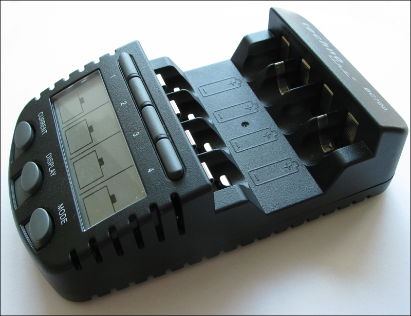
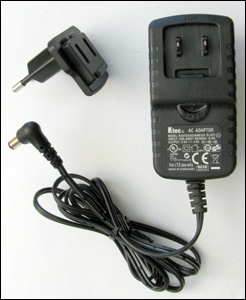
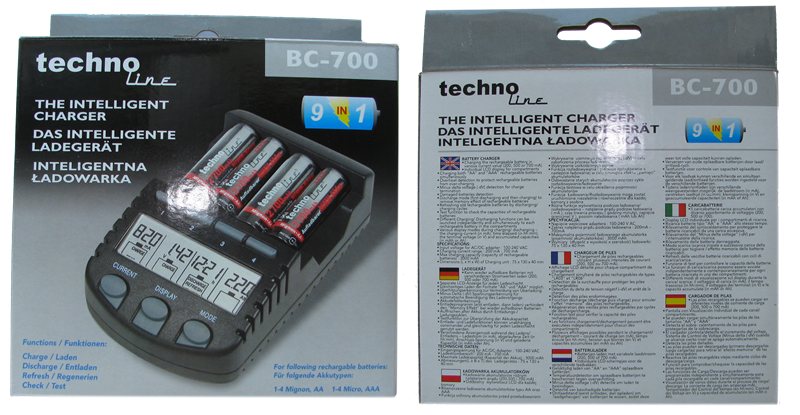
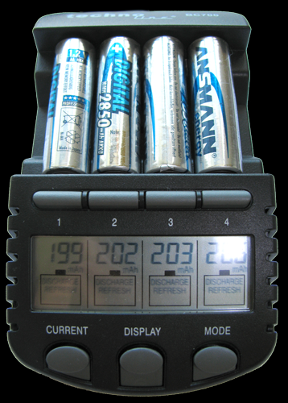
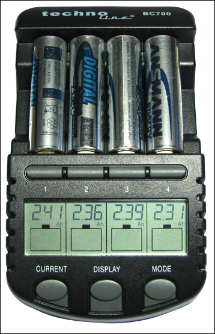

Введение
Так случилось, что после двух лет активного увлечения фотографией я немного подзабил на всё это дело. И, вот, спустя год, недельки 3 назад, меня «пробило» на фото. Достал фотоаппарат, аккумуляторы, побежал на радостях фотографировать. Сделал 2 фотки, получил сообщение: «Замените аккумуляторы». «С кем не бывает, захватил случайно разряженный комплект», подумал я. Поставил другой комплект — одна-две фотки и фотоаппарат просит новые батарейки. Так со всеми моими четырьмя парами аккумуляторов. Не въехав в ситуацию, пошел, воткнул их в зарядку, пока читал на ночь хабр, заметил, что от момента установки на зарядку не прошло и пяти минут, а светодиод зарядного устройства уже оповещает о полной зарядке. С этого момента и началась история.

Вместе с фотиком, как я уже сказал, использовались 8 Ni-MH аккумуляторов типа AA емкостью 2850mAh от бренда Ansmann. Заряжал их тем, чем они комплектовались — зарядным устройством Ansmann PhotoCam III (слева).
Не сказал бы, что плохое зарядное устройство, пока не столкнулся с этой проблемой. Погуглив, выяснил, что проблема в том, что мои аккумуляторы очень долго пролежали заряженными, от чего очень сильно потеряли свою ёмкость. Честно сказать, я изрядно расстроился. Еще несколько часов на гугл, и я был перед выбором: купить новые аккумуляторы и не парится, либо потратится на умное зарядное устройство, которое смогло бы восстановить емкость аккумуляторов. Новые аккумуляторы — это, конечно, быстро и без мучений, но с обычной недорогой зарядкой и моей внезапной невнимательностью они могут быстро отправится за уже испорченными. И что потом? Опять деньги на ветер? Стоит заметить, что цена 8 таких аккумуляторов равна цене умного зарядного устройства. Недолго думая, заказал доставку зарядки из интернет-магазина и ушел спать.
TechnoLine BC-700 в руках
TechnoLine BC-700 можно смело отнести к классу продвинутых, умных зарядных устройств. С его помощью можно производить зарядку аккумуляторов типа АА и ААА (пальчиковые и мини-мальчиковые). Заряжать можно никель-кадмиевые (Ni-Cd) а также никель-металгидридные (Ni-MH) аккумуляторные батареи емкостью до 3000mAh токами в 200, 500 или 700mA. Одним из главных преимуществ является работа с каждым аккумулятором индивидуально (по абсолютно всем параметрам), в то время как простенькие ЗУ могут заряжать только пары аккумуляторов. Еще одной интересной фичей является датчик перегрева, приостанавливающий процесс зарядки до снижения температуры. Устройство имеет 4 режима работы: зарядка, разрядка, восстановление аккумуляторов и их тестирование. Кроме того, во время работы ЗУ можно просмотреть информацию о токе зарядки/разрядки, напряжении каждого элемента питания, затраченном на текущий цикл времени, заряженной емкости аккумулятора.
Комплектация
Поставляется в обычной картонной коробке, внутри:

Комплектация, как видите, немного скудная. Лично мне не хватает чехла или сумочки для транспортировки. Само зарядное устройство выглядит очень классно. Пластик шероховатый, достаточно прочный (падение со стола выдержал без повреждений). Клеммы сделаны качественно, очень плотно удерживают аккумуляторы даже после двух недель использования. Габариты TechnoLine BC-700 вполне обычные — 130x75x40 мм. Ножки, к сожалению, выполнены из пластика, скользящего по столу. Блок питания выполнен с весьма необычной мелочью — отсоединяемой вилкой. Сделано это, похоже, для удобства транспортировки.

Как уже говорилось, зарядное устройство работает с каждым аккумулятором отдельно. Для реализации функционала на передней панели мы видим 4 кнопки выбора активного слота, четырёхсекционный ЖК дисплей, кнопка установки тока зарядки (Current), кнопка смены отображаемой информации (ток, напряжение, затраченное время, заряженная емкость) и кнопка смены режима работы. Вот о режимах работы сейчас и поговорим.
Режимы работы
Зарядка
Итак, основной режим работы — зарядка. Режим позволяет зарядить ваш элемент питания токами в 200mA, 500mA или 700mA. При установке аккумуляторной батареи в отсек, автоматически выбирается режим «зарядка» и ток 200mA. На экране 4 секунды отображается текущее напряжение на элементе питания, затем еще 4 секунды мы видим ток зарядки. Если в течение этих 8 секунд не производить дополнительных настоек, то процесс начнётся именно с такими параметрами. Если производить — процесс начнётся через 4 секунды после последнего нажатия кнопки. Кстати говоря, лучше всего производить зарядку малым током. Окончание зарядки определяется по -ΔV. Ниже приведена таблица «Время зарядки аккумуляторов разными токами» из инструкции.
|
Тип аккумулятора |
Емкость |
Ток зарядки (mA) |
Приблизительное время зарядки |
|
AA |
2700mAh |
700 |
~3 часа 45 минут |
|
500 |
~5 часов | ||
|
200 |
~13 часов | ||
|
AAA |
1000mAh |
700 |
~1 час |
|
500 |
~1 час 25 минут | ||
|
200 |
~3 часа 30 минут |
Разрядка
Вторым режимом работы BC-700 является разрядка. Этот режим необходимо использовать, если вы планируете длительное (более 2 недель) хранение аккумуляторов. Разряженные элементы питания хранятся, практически, не теряя емкость. (Об этом я, к сожалению, узнал очень поздно.) Также, режим хорош для вывода свеженьких аккумуляторов на номинальные показатели емкости. В этом режиме аккумуляторы сначала разряжаются до 0.9V, а затем заряжаются до определения -ΔV. Частичным недостатком реализации этого режима в BC-700 можно назвать выполнение зарядки после полной разрядки аккумулятора. Но, с другой стороны, это удобная мелочь для тренировки ваших элементов питания. Чтобы аккумуляторы оставались разряженными нужно отловить момент перехода в режим зарядки и извлечь батарейку. Токи разрядки составляют 50% от тока зарядки. Соответственно, при запуске режима работы «разрядка» нужно учитывать, что, выбрав ток разрядки 350mA, наши аккумуляторы будут заряжены током 700mA, 250mA → 500mA, 100mA → 200mA соответственно. После завершения цикла «разрядка/зарядка» на экран будет выведено сообщение Full.
Восстановление
(Это тот режим, который спас мои аккумуляторы. Но о самой процедуре спасения поговорим позже. Пока — сугубо обзор.)
Режим используется для восстановления емкости старых аккумуляторов, которые давно не использовались и держат свой заряд слабо, не так, как должны. Процесс заключается в множестве циклов разрядки/зарядки, которые призваны выжать из старых аккумуляторов всю возможную мощь. Циклы будут повторятся до тех пор, пока ёмкость аккумуляторов не перестанет увеличиваться. Токи зарядки/разрядки соответствуют описанным в пункте «разрядка» и справедливы для режима «восстановление». Сразу оговорюсь, что этот режим восстанавливал мои аккумуляторы 5 суток. Долго, но эффективно.
Тестирование
Режим служит для получения информации о фактической емкости аккумулятора. Происходит сначала полная разрядка, затем зарядка. На этом функция завершается, а мы получаем фактическое значение емкости аккумулятора. Выбор токов аналогичен предыдущим двум пунктам и справедлив в режиме «Тестирование».
Мой опыт
Теперь расскажу вам о своём опыте использования этого девайса. Как говорилось уже в начале топика, имеются 8 убитых аккумуляторов, зарядка и вагон терпения. Почитав мануал, понял, что ставить в режим тестирования особого смысла нет, т.к. емкость своих «усохших» аккумуляторов я увижу и после первого цикла разрядки/зарядки в режиме восстановления. Поставив первые 4 элементов питания (время было где-то час дня), я поехал по делам. Вернулся часам к 7 вечера, побежал глянуть на экран девайса. Происходила уже вторая половина первого цикла — зарядка, а еще через 2 часа я увидел, что начался второй цикл. Тогда я не думал писать этот топик, но фотку сделал просто для себя (поэтому некоторые фотки унылого качества), чтобы потом оценить эффект этого режима. Как видно на фотографии, емкость всех четырёх аккумуляторов приблизительно равна 200mAh, что ничтожно мало и составляет приблизительно четырнадцатую часть от номинальной емкость батареи. Я был удивлен, насколько сильно скукожились аккумуляторы...

Проходили дни, я поглядывал на экран, созерцая явное восстановление емкости аккумуляторов.
Спустя 5 суток после старта на BC-700 я увидел радостное «Full». Когда на экране отобразилась текущая емкость, я, честно говоря, был удивлен, счастлив и весел одновременно. За 5 суток TechnoLine BC-700 удалось увеличить (или точнее говоря — восстановить) емкость аккумуляторов в 12 раз, а именно с ~200mAh до ~2400mAh. Я считаю, что это — потрясающий результат. Я очень доволен как результатом работы устройства, так и всем устройством в целом. Ни капельки не жалею, что раскошелился на него, т.к. пригодится еще не один десяток раз. Кстати говоря, на тот комплект, который первым прошел через BC-700 на следующий день было сделано ~250 фотографий. Еще через 5 суток был восстановлены еще 4 моих аккумулятора. Зарядка восстановила их емкость тоже приблизительно в 12 раз.

Заключение
Плюсы и минусы:
+ Приятный и интересный дизайн
+ Качественные клеммы, зажимающие аккумулятор
+ Работа с каждым аккумулятором индивидуально
+ Защита от перегрева
+ Съемная вилка на блоке питания (удобно транспортировать)
+ Определение завершения зарядки по -ΔV
+ Реально восстанавливает аккумуляторы, которые долго не использовались
+ Умеренная цена (~$50)
- Пластиковые ножки
- Отсутствие чехла/сумочки для транспортировки
TechnoLine BC-700 — это отличное зарядное устройство, которое может заряжать ваши аккумуляторы с умом, поддерживать их в рабочем состоянии, восстанавливать уже, казалось бы, совершенно безнадежные элементы питания. Если вы встанете перед таким-же выбором как и я: купить новые аккумуляторы, или это зарядное устройство, то я вам советую остановиться именно на покупке зарядника TechnoLine BC-700, особенно, учитывая то, что стоимость этого зарядного устройства приблизительно равна стоимости 8 аккумуляторов емкостью 2850mAh более-менее известного бренда.
Update 1: На Амазоне можно заказать абсолютно идентичный девайс производства фирмы La Crosse за $35,9. У нас он стоит около $50. Только не забывайте о том, что вилка будет, скорее всего, не для наших розеток.